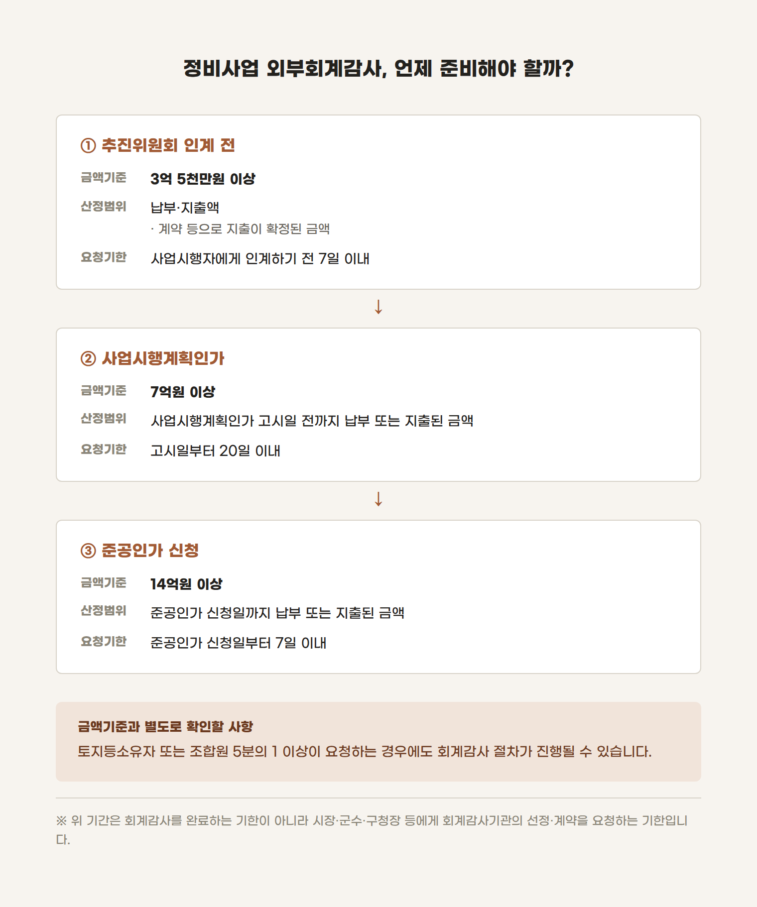
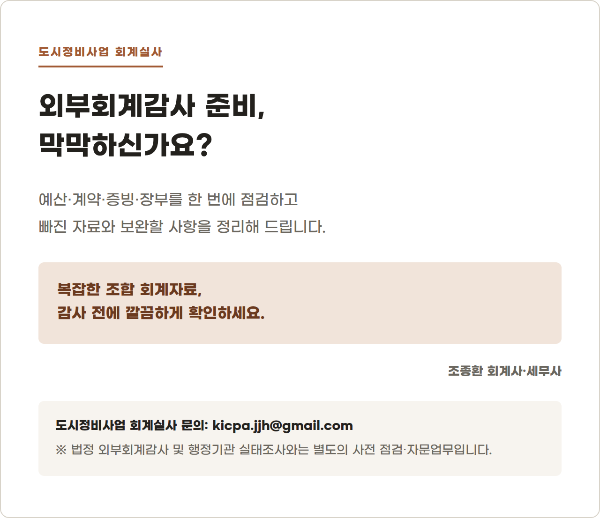

우리 조합도 외부회계감사를 받아야 할까?
외부회계감사는 결산이 끝난 뒤 필요할 때 회계법인을 불러 받는 절차라고 생각하기 쉽습니다.
정비사업조합의 회계감사는 조금 다릅니다.
사업이 진행되는 특정 단계마다 지출금액을 확인해야 하고, 정해진 기준을 넘으면 일정한 기간 안에 회계감사기관의 선정과 계약을 요청해야 합니다.
여기서 자주 등장하는 숫자가 있습니다. 3억 5천만원, 7억원, 14억원입니다.
우리 조합은 언제, 어떤 금액을 기준으로 외부회계감사를 준비해야 할까요?
1. 정비사업 회계감사는 한 번만 받는 것이 아닙니다
도시정비법 제112조는 정비사업의 주요 단계별로 회계감사 기준을 정하고 있습니다.

여기서 주의할 점이 있습니다.
위 도식에 나온 기간은 조합이 임의로 감사인을 선정해 회계감사를 끝내야 하는 기한을 의미하는 것이 아닙니다.
법에서는 해당 기간 안에 시장·군수·구청장 등에게 회계감사기관의 선정과 계약을 요청하도록 규정하고 있습니다.
요청을 받은 시장·군수 등은 회계감사기관을 선정하고 회계감사가 이루어지도록 해야 합니다. 필요한 감사비용도 사업시행자나 추진위원회가 미리 예치합니다.
따라서 조합이 평소 이용하던 세무대리인이나 회계법인에 결산을 맡겼다는 사실만으로 도시정비법상 회계감사 절차를 거친 것이 되는 것은 아닙니다.
2. 세 단계의 금액을 모두 같은 방법으로 계산하는 것은 아닙니다
금액기준만 기억하고 산정범위를 놓치는 경우가 있습니다.
특히 첫 번째 단계와 나머지 두 단계는 법에서 사용하는 문구가 다릅니다.
- 추진위원회에서 사업시행자로 인계하기 전: 계약 등에 따라 앞으로 지출될 것이 확정된 금액까지 합산
- 사업시행계획인가 및 준공인가 단계: 납부 또는 지출된 금액을 기준으로 판단
따라서 세 단계 모두 통장에서 출금된 금액만 동일하게 합산하면 된다고 생각하기보다, 각 단계의 법문이 정한 산정범위를 따로 확인해야 합니다.
3. 금액기준 미만이라도 회계감사를 요청할 수 있습니다
3억 5천만원, 7억원, 14억원만 확인하면 회계감사 대상 여부가 모두 정리되는 것은 아닙니다.
도시정비법 제112조는 토지등소유자 또는 조합원 5분의 1 이상이 사업시행자에게 회계감사를 요청하는 경우도 별도로 규정하고 있습니다.
이 경우에는 앞에서 살펴본 세 가지 금액기준과 별도로 회계감사 절차가 진행될 수 있습니다.
따라서 다음과 같이 단정하기는 어렵습니다.
우리 조합은 아직 7억원을 지출하지 않았으니 회계감사와 관계없습니다.
법정 금액기준뿐 아니라 현재 사업단계, 조합원 등의 감사 요청 여부도 함께 확인해야 합니다.
4. 회계감사 직전에 자료를 맞추려 하면 늦을 수 있습니다
회계감사 대상이 된 뒤 자료를 한꺼번에 정리하려고 하면 생각보다 많은 시간이 필요합니다.
통장과 장부의 금액이 일치하더라도 계약 및 지출의 근거가 충분하지 않을 수 있기 때문입니다.
회계감사에 대비하려면 평소 다음 자료가 하나의 거래 흐름으로 연결돼 있어야 합니다.
- 총회·대의원회·이사회 의결서
- 예산서와 예산 사용내역
- 업체 선정 및 계약 관련 자료
- 계약서와 과업지시서
- 기성 및 검수 확인자료
- 세금계산서 등 거래 증빙
- 지출결의서와 내부 결재자료
- 통장 거래내역과 금전출납부
- 총계정원장과 결산 관련 자료
예를 들어 계약서는 있는데 업체 선정과 관련된 회의록이 없거나, 통장 지급내역은 있는데 검수자료와 지출결의서가 없다면 거래의 전체 과정을 확인하기 어렵습니다.
회계감사는 단순히 장부의 숫자만 맞추는 절차가 아닙니다. 그 숫자가 어떤 예산과 의결, 계약 및 증빙을 거쳐 만들어졌는지를 함께 확인하는 과정입니다.
5. 우리 조합은 이렇게 확인해볼 수 있습니다
먼저 현재 사업단계를 확인합니다.
그 다음 해당 기준일까지 납부·지출한 금액을 집계하고, 추진위원회 인계 단계라면 계약 등에 따라 지출이 확정된 금액도 별도로 확인합니다.
마지막으로 다음 질문에 답해보면 됩니다.
- 현재 추진위원회 인계 전인가
- 사업시행계획인가가 고시됐는가
- 준공인가 신청을 앞두고 있는가
- 단계별 금액기준을 넘었는가
- 조합원 5분의 1 이상의 회계감사 요청이 있었는가
- 법정 요청기한이 언제 시작되는가
- 감사에 필요한 예산과 자료를 준비했는가
정비사업 회계감사는 기준금액을 넘은 뒤에야 급하게 준비하는 업무가 아닙니다.
사업단계가 바뀌기 전에 누적 지출액과 계약상 확정금액을 미리 점검하고, 회의록·계약서·증빙·장부가 서로 연결되는지 확인해야 합니다.
감사 직전에 숫자를 맞추는 것보다, 평소 자료가 자연스럽게 맞도록 관리하는 것이 훨씬 중요합니다.
정비사업 회계자료를 직접 확인하고 정리하는 데 도움이 필요하시다면 아래 서비스를 참고해 주세요.

이 글은 2026년 9월 16일 현재 일반적인 정보 제공을 위해 작성되었습니다. 실제 회계감사 대상 여부와 금액 산정은 사업시행 방식, 현재 사업단계 및 개별 계약내용 등에 따라 달라질 수 있으므로 관할 행정기관 및 전문가의 확인이 필요합니다.
조종환 공인회계사·세무사